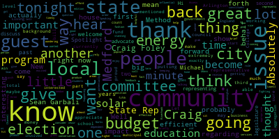

[Marks]: Hello, and welcome to another edition of Spotlight on Method. I'm your host, Michael Marks. I'm standing here at Channel 3 Local Community Access. Come on down and produce your own show. I'm very excited to have two new guests tonight. My first guest is State Rep. Sean Garbali. He's been a state rep for the past 10 years, representing our community in the state legislature. And my second guest is Craig Foley. He's an advocate for green energy and issues that we're going to push forward in this community. We'll discuss tonight surrounding how we can be more efficient and effective when it comes to energy conservation. So sit back, grab your popcorn, and enjoy the show. Hi, and welcome back. I'm here with my first guest, state rep, Sean Garbali. He's in his fifth term as a state representative who represents the Arlington and Method areas, and I'm proud to say he's here tonight.
[6gZWVWRAa_8_SPEAKER_01]: Thanks, Councilor.
[Marks]: Thank you very much for being here tonight.
[6gZWVWRAa_8_SPEAKER_01]: It's great to be here.
[Marks]: You know, my first question, Sean, is maybe if you can give us a little background. People know who a city council is. They know who a school committee person is.
[6gZWVWRAa_8_SPEAKER_01]: What exactly does a state representative do? That's a great question, Councilor. And first, let me just say thank you for the invitation, for coming on your show. Thank you for starting this show. You've always been a strong advocate for transparency and to be able to bring that resource and what's happening in government and around the city of Medford to the viewers in Medford is truly something that's welcomed needed and so I really thank you for that. Thank you. So it's really been an honor to to be one of Medford's state representatives over the past five terms. It's been one of the greatest jobs, certainly one of the greatest honors that I have had. I'm in the State House really every single day trying to be an advocate and the champion for the people of Medford and for the people of Arlington. Every constituent, every individual in Medford and Arlington has my cell phone number. They call me when they need help, whether it be something with the Department of Transportation, something with MassHealth, something around school buildings, advocating for more local aid, and of course working on issues we care about, like trying to bring more local aid back to Medford. criminal justice reform, the environment, public education, public higher education, issues that really impact the people of Medford and the people from Arlington. So that's what I'm working on in the Statehouse literally every single day and it's been such an honor because I'm not from Medford, I live in Arlington. So I've been so welcomed by the people of Medford. And it's truly been great.
[Marks]: Well, I think it's fair to say that you've been representing Medford in such a great manner for the past almost 10 years that we consider you part of Medford.
[6gZWVWRAa_8_SPEAKER_01]: Well, it's funny. I live closer to Medford than I do Arlington Center. So I'll go to West Medford Square rather than Arlington Center. That's right. The confidence that the people of Medford have placed in me is something I certainly don't take for granted.
[Marks]: Well, that's great. And I think people appreciate the fact that you do a lot regarding constituent services. And it's important, as I know as a member of the city council, that when people call, you've got to get back in a timely fashion. And I hear good things about what you're doing on behalf of our community. So I want to thank you. I just wanted to get into briefly, I know the house budget is up and before you right now. If you can give us just a little feedback on the house budget and what, if any impacts there will be to the city of Medford.
[6gZWVWRAa_8_SPEAKER_01]: Well, you know, Councilor, certainly as the delegation, myself, Rep. Donato, Rep. Barber, and Senator Jalen, our priority has always been to bring as much money back to the city of Medford, especially in these challenging fiscal times for the city. We're certainly advocating for as much local aid in Chapter 70 for our schools, unrestricted general government aid for our city. You know, Medford is one of those communities, like Arlington, and there's about 15 others, that before 2002, when there was a different local aid formula known as additional assistance, we did very well. And then after 2002, when the new formula was implemented, Medford didn't do horrible, but we didn't do as well as we used to. And so that has hurt us and as we're now we're in 2018 We're not seeing as much local aid percentage as we once did So when we're talking with leadership and talking with our colleagues certainly changing the formula to take in consideration medford's Unique situation in this commonwealth, but also trying to bring as much money under the current formula so Medford gets more. And as a member of the Ways and Means Committee, I'm proud to say that we have met Governor Baker's unrestricted general government aid number and we've actually exceeded his Chapter 70 number, so actually Medford will do better than we did under the governor's budget in terms of Chapter 70. In addition to that, trying to fully fund the special education circuit breaker, which is critical for our schools, critical for our city, as well as fully funding McKinney-Vento, which is the money that the state reimburses the city for homeless student transportation costs, which is just So critical. But I'm also proud to say there was a commission that many of us put in called the Foundation Budget Review Commission that really analyzed how much the state is not funding its obligation to cities and towns around education and some other issues. And it's a large number. just the other day with the budget coming up and budget debates starting in a couple of weeks, I have filed an amendment to fully fund the Foundation Budget Review Commission, and that includes funding health insurance costs that the city has to pay for, that really the state should pay for, and special education costs that the city has to pay for, that the state really should pay for, because it's an obligation that the state has to fund these services because it's a state mandate. We should fund those services. So we're really working hard to fund that commission, which would bring back millions of dollars to the city of Medford, which obviously is absolutely critical during these fiscal times. And I look forward to continuing to work with members of the city council and the members of the school committee who are just incredible advocates for trying to bring back more local aid to cities and towns across the Commonwealth, but in particular to the city of Medford.
[Marks]: As you probably know, we've become so dependent on local aid as a community that when we set our budget, we rely on the money coming from the state in order to fund the things like you mentioned, education. Our education budget in the city is a third of our total budget, over a third of our total budget. So it's a big, important issue in the community, and it's helpful to know that you're on the Ways and Means Committee, which is an influential position, and that you're going to be fighting on behalf of our community to make sure we receive the appropriate funds.
[6gZWVWRAa_8_SPEAKER_01]: Absolutely. I remember when you contacted me last year around the Massachusetts Cultural Council. As you know, Medford receives a lot of funding, well, funding from that line item to fund arts programs in Medford. So, you know, that line item is so important. There's so many line items in the budget that help the city of Medford and the people of Medford. You know, whether it's mental health services, disability services, environmental services, police, fire, Many of the line items in the state budget impact the people of Medford, and we get that at the statehouse. And that's why it's so important to fund this commission fully so that we can meet the obligation the state hasn't been meeting. It's just so critical.
[Marks]: Speaking of education. I know you're the vice chair of the higher education house committee And I was wondering if you can give us a little brief background on what's currently happening before that committee and your role with that committee absolutely, so
[6gZWVWRAa_8_SPEAKER_01]: You know, we have 29 campuses of higher learning across the Commonwealth, and that includes UMass, that includes state universities, and that includes community colleges. And a couple of the biggest issues that we're working on in the committee is around access. You know, I know you've probably heard other states are trying to do free community college or free state university. It does cost a lot of money. uh... so what we're trying to do is is pass a bill that i filed known as the finish line grant so it doesn't say you would receive free community college uh... for all of your two years or four years at a public higher ed institution across massachusetts but what it does say and what the bill does do is depending on your family's uh... income so you have to be low income to qualify, but you also have to work hard. You have to get good grades. And if you do that after your first year, so after you're into your third semester, you would get free tuition and fees. And why that's important is the statistics that bear out, is that if you're a student on low income, you are more likely to drop out. after your second term because of family obligations, because you just simply can't afford it. And so we want to make sure that kids and students who work hard, who play by the rules, who are trying to get their degree can get there with hard work and support from the state. But at the same time, it's not a handout. It's not just a free education. These students are working hard. to attain their degree. And we want to make sure they finish because it's in the best interest of the Commonwealth. 90% of these students who go to one of our 29 campuses across the state are going to remain in Massachusetts. They're going to stay in the city of Medford, invest in our economy, in our jobs, and we should invest in them.
[Marks]: That's great and you just hit home with me because I actually have three students right now. I have two at Framingham State College and one at UMass Lowell.
[6gZWVWRAa_8_SPEAKER_01]: And I went to UMass Lowell as well.
[Marks]: Proud Riverhawk. Let me tell you, all great schools And it's great to hear that you're talking about putting some money into a program that could potentially help those who may not be able to afford to get into college and so forth. And keeping our population educated is key in Massachusetts. And I'm glad to hear that there's a bill that you're working on. Where does that bill currently stand?
[6gZWVWRAa_8_SPEAKER_01]: It was executed out of the Higher Education Committee, and it's currently in Ways and Means. Oh, great. So we're really hoping we can try to get that passed this session, along with many other items around sexual assault, violence on campuses, which is a critical issue facing many young adults in Massachusetts, including trying to give kids with disabilities a chance to go to college even if they can't pass the MCAS test. And that's important because if you measure outcomes, students with Down syndrome, students with autism are more successful when it comes to independence, employment, after being able to take college courses versus rather if they're not allowed. So there's a lot of issues out there.
[Marks]: And I know you're working on a lot. Criminal justice reform is also another issue I know that's been near and dear to you. Can you give us an update on how that's going?
[6gZWVWRAa_8_SPEAKER_01]: Yeah, it's such an important issue and I will tell you, I heard from so many people. in the city of Medford who wanted to see a comprehensive criminal justice reform bill that really just made sense. You know, low-level offenders, non-violent offenders who made a mistake, who were really, you know, who were really treated unfairly, whether it was based on income, based on race. But we know people make mistakes. But we also know that second chances are important. And this bill is such a comprehensive bill in terms of expungement for juveniles, pre-trial bail reform, repealing some minimum mandatory sentences. That makes sense. That's low-level drug offenses, not violent crimes. And of course, the bill that I'm most passionate about is a bill that I've been filing for six years that got included in the bill, and that is creating what's known as restorative justice and making it a mandated program across the state. And what restorative justice is, Councilor, and I know you know this because we've talked about it, but for the viewers at home, If you're a low-level offender, if you're a first-time offender, so any violent offender wouldn't qualify under the program, but if you're a low-level, first-time offender, to make sure you don't go before a judge and get a permanent record that's going to impact the rest of your life in a negative way, that you'll be more likely to re-offend because of that record, you would be in the community with the police chief, with the police, doing, you know, rest giving restitution some community service, but something that is agreed to by the person you harmed or the employer the business you harmed or the city in the case that it's graffiti or you know, whatever may be you would You would pay your debt to society, but you would also have a second chance if you complete the program successfully. The House and the Senate just voted it the other day, and it now sits before Governor Baker waiting for his signature.
[Marks]: Wow, it seems like you have a full plate of issues.
[6gZWVWRAa_8_SPEAKER_01]: I know you are too.
[Marks]: Another issue on the local level is, and I'm just throwing this out there, I've always had an issue with attracting people during election time. You know, because people don't get out and vote. And we find it on the local level, as you probably know, if you get 25 to 30 percent, you're extremely lucky in a local election. And it starts to build up. A state election, you get a little more. In a presidential election, you get, you know, a larger percentage. any thoughts on how we could, as a community, and I'm sure Arlington struggles with the same, how can we spur the interest of a community to get them out, let them know that local government is extremely important, we probably impact more that goes on in their life than the federal or the state government, and how do we get more people involved and interested in getting out and getting involved in the community?
[6gZWVWRAa_8_SPEAKER_01]: Well, one, you're absolutely right. Before I was a state representative, I served for a term on the Arlington School Committee. Nothing impacts people more than local government. And so it's behooved upon them and critical for our system, our democracy, our way of life for people to get involved in local government. We just had an election, town election in Arlington. On Saturday, we had 15% voter turnout, abysmal, an absolute disgrace. There are many things that we can do. There's many things that we should do. I had filed a civics education bill that is going to be coming before us later this year.
[SPEAKER_00]: I've heard about that.
[6gZWVWRAa_8_SPEAKER_01]: Really mandates civics as a curriculum. We're not teaching civics. And one of the reasons for that is because 93 ed reform, the MCAS test, There are so many things that teachers are mandated to teach that we've lost focus on teaching democracy to our young people. But I would also say it's not just young people who aren't involved, it's adults as well. So we need to pass the civics bill. We also have to make it easier to vote. You know, a lot of, you know, I passed the online voter registration was my bill of a few terms ago, which allowed people to not go to City Hall to register to vote, but they could just do it on their computer. You know, we need to make it easier for people to vote. So that's why I support automatic voter registration, where it would be an opt out system rather than an opt in. You know, that you could vote automatically once you turn 18, you would be added to the rolls. But I also think we need to, you know, encourage civic civil engagement in our city, you know, and across our communities across the state. One issue that I care very deeply about that, you know, it's a little controversial. And that is I have filed a bill two sessions ago that I've continued to file that would allow 17-year-olds to vote in municipal elections only. And the reason why I think that's important, if you're a senior, 18 years old in high school, you're getting ready for college. You're getting ready for college essays. You're getting ready for the end of your senior year. You're not getting focused on voting. because nothing impacts people in Medford like local government, it's really important to teach young people how important it is to get involved. And so if they can get involved in voting in Medford and across all 351 cities and towns, get involved at 17 when they're juniors, they could make a part of the curriculum here at Medford High with the civics bill that we're hopefully gonna pass this session, and it becomes a way of life. And then you're breeding You're building good habits when it comes to civic engagement for the rest of their life. And so it's really a cultural issue. It's important.
[Marks]: I actually like the idea.
[6gZWVWRAa_8_SPEAKER_01]: Yeah. It's a different idea. So it's something that needs to be thought out and discussed. We have to have these discussions.
[Marks]: Absolutely. And to me, everything's on the table. So any way we can promote elections, that being one, I think is a positive thing. Absolutely. You know, again, I want to thank you for your time. I want to thank you for your effort on behalf of this community. I know that when we have crucial issues that we can count on your support. We can count on your being there. And I think that goes a long way in our community. Again, I want to thank you.
[6gZWVWRAa_8_SPEAKER_01]: Well, thank you, Councilor. And I will say I truly appreciate you hosting this program. And, you know, a day doesn't go by when I don't get an email or a phone call from you advocating on behalf of your constituents in Medford. And it's really good to have a city councillor as well as other city councillors who are passionate about not just saying the right things, but trying to do the right things and to advocate on behalf of the city. So I really appreciate what you're doing. This is a tremendous resource here at the high school. I really hope more people in Medford will come down to this studio and utilize it because it really is a great tool. It's a great engagement opportunity, and it's a great service to the people of Medford. I'm so appreciative that you started this show, and I hope to see more of it, and I hope to come more often.
[Marks]: Absolutely, and I thank you again for your time.
[6gZWVWRAa_8_SPEAKER_01]: Thank you. Thank you, Councilor.
[Marks]: Hi, and I'm back with my next guest, Craig Foley. Craig and I just spent several minutes discussing actually what he does, and I'm still confused. So Craig, if you can fill us in on exactly what do you do, Craig?
[SPEAKER_00]: I'm still confused. It's good to know. So what I do is at the intersection, this crazy intersection between real estate and sustainability. So I list homes that fit into a category that most people call green homes, but we don't use that term in terms of marketing them anymore. It's high performance homes. I do a lot of real estate education on this topic locally and nationally. I do a lot of work with National Association of Realtors on the topic. And I have a side gig company that I own called Sustainable Real Estate Consulting Services that get billable hours for doing projects that the U.S. Department of Energy is funding to deal with this topic about how we make realtors be more educated about this topic in the marketplace and make sure that we're getting the right data to the public that they need to make the right kind of decisions in the home buying process and the home selling process.
[Marks]: Very interesting. So one of the big issues in the community is how do we become more energy efficient? And I know in the City of Medford we've taken some steps regarding solar energy, regarding wind power. We are in the process right now of putting LED lights in our business districts. Are there any suggestions that you can give, not only for a community, but a business owner or a local resident on how to become, ways of becoming more energy efficient?
[SPEAKER_00]: Yeah, well, it's critical right now that we grab hold to energy efficiency and it's really underplayed, I think, in the marketplace. People don't really understand. They complain about their power bills, right? You know, all of the time. And we just don't take advantage of some of the programs that are out there that the state of Massachusetts, I mean, there's no state that gives more funding than the state of Massachusetts in the entire United States to be able to fund energy efficiency improvements in residential homes and in businesses. And that funding all runs through the Mass Save program, right? And great little program, you know, we're the only state in the union that I know of that has a no-cost energy assessment. You know, most states, if you go to New Hampshire, Maine, Vermont, you pay 200, 300 bucks to have the same equivalent of the Mass Save program come into your home. In this state, it's funded. Not only is it funded, but, you know, if they suggest that you need some air sealing work or some insulation work, You know, insulation in the attic usually costs $2,500 in a standard home, right? The state will give you $2,000 of the $2,500. I mean, it's an incredible program that only 25% of Massachusetts homeowners are taking advantage of. It's kind of crazy that we, you know, we just, we're not taking advantage of this phenomenal program. We have so many opportunities out there.
[Marks]: What else is part of the program? I know you mentioned insulation.
[SPEAKER_00]: Air sealing, definitely. I mean, when you're going, when you're replacing heating systems, cooling systems, there are much more efficient ways to do that now. The state gives you funding to be able to make up that delta between these more expensive units and what you pay normally. And in the end, when you do that stuff, you lower your operating costs, right? I mean, we know that power bills over time keep on rising. The best way to control the rising costs of power are to make your home more energy efficient. And there's a reason why Massachusetts is a leader in funding this. We have a problem. We're at the end of the pipeline here in the Northeast, right? I mean, we've got power constraints coming up here. We've got a real leader of power grids in the United States with the independent system operator of New England, ISO New England. They really get that we've got to tackle these issues in ways that other parts of the country don't have to. And so that's where that funding comes from. It's forward-thinking legislators that get that we've got a problem, and they're looking at innovative ways to come to solutions. And it's just so sad that residential homeowners and business owners just you know, for whatever reason, aren't aware of the opportunities that are out there.
[Marks]: I see Mass Save, they come out at a lot of local events promoting this, and you're right, if we were able to get it out in a way that people feel comfortable, a lot of people don't know about the program, what it entails, and especially if it's at no cost for just an analysis, I mean, that's a win-win.
[SPEAKER_00]: It's a no-brainer, right? I mean, it's an absolute no-brainer.
[Marks]: So the other issue I hear off and on is solar. Living in New England, do we have enough sun to make it feasible to have solar power and so forth? What are your thoughts of someone that may be going back and forth, whether they're going to go solar or not?
[SPEAKER_00]: Yeah. Well, this is one of my favorite topics to talk about in the real estate community. I just passed a class through the Massachusetts Real Estate Board. on, for a continuing education class, on solar PV and the residential real estate transaction. So it's a great time to be asking this question. I've done a lot of work on this topic. Massachusetts Clean Energy Center, which runs something called the Production Tracking System, the PTS, has all of the data about the number of homeowners that have solar PV on their rooftops. You know, virtually overnight, since Green Communities Act have passed, we now have 70,000 homes in the state of Massachusetts with solar PV, photovoltaics, you know, turning photons from the sun into voltage, you know, turning it into electricity in the state right now. And they're growing at a rate of 1,500 to 2,000 a month according to MassCEC. I mean, so this is a real part of the marketplace, you know. And again, state incentives to make sure we move people towards clean power and be able to control their expenses are incredible. We've had two state incentive programs that are, again, some of the best incentive programs out there in the United States, SREC 1 and SREC 2. SREC stands for Solar Renewable Energy Credit. Now we're transitioning to a new incentive. It's going to be a tariff-based incentive that will be coming up this summer called the SMART program. Again, an incredible incentive for Massachusetts homeowners to be able to put solar PV on their rooftops and own it outright, which is a fantastic opportunity if you can do that, right? And if you can't, there are leasing opportunities as well out there. from a residential real estate perspective, if you can own that system outright, it is a huge advantage to you from just a smart financial choice at this point. There's no question about it. I mean, the ROI on these systems is five, six, seven years. I mean, and these systems have a life of 25 years. That's their useful life. We expect that they're going to last longer than that. So the payback is incredible, and you can really control your operating costs for your home, which is critical. And, you know, I mean, you can participate in being part of a solution to the energy and environmental challenges that we face, which are real.
[Marks]: I mean, those are real challenges. So living in New England, does that put a damper on things because of
[SPEAKER_00]: not knows that you know i mean people that's if that is a total fable i mean massachusetts is uh... uh... leader in the clean energy sector right now and a lot of that has to do with residential rooftops putting putting so in commercial rooftops as well i mean we produce plenty of power so you know i i just sold the project in in boston in fort hill uh... this project get into the details. I don't know if you've heard of net zero buildings. Have you ever heard of that concept? So the concept, you know, the average home in Massachusetts, you know, you get varying data on this, but I'll use the conservative one, uses 109 million BTUs of energy every year on their home. That's an immense amount of energy. Every home in Massachusetts, that's the average, right? So these properties that I sold in Fort Hill were not only net zero, so they produced as much energy as they used on an annual basis. So they're at net zero. These were energy positive. They have HRS ratings of negative 14 and negative 22. This was on the marketplace. They got a 22% price premium versus new construction right down the street. Because buyers realize that the savings of the operating costs and the fact that you're part of a solution to some of these challenges that we face, and the indoor air quality is exceptional in them. They're healthy to live in. They're comfortable to live in. It just makes all kinds of sense. So that's the kind of marketplace that I'm in. I'm really excited to be in that place. And it's cool to be able to. I'm really thankful that you invited me on the show, actually, and to talk about this, because it's an important concept.
[Marks]: It's a very important issue. And we have a minute left. And I hate to do this to you, but. That's OK. Another big issue that recently came forward was municipal aggregation. If you could just give us a one minute thought on municipal aggregation. I know you were instrumental in Melrose in bringing their program to fruition. Just give us one minute that you think people should know about how this works for those that are out there.
[SPEAKER_00]: Sure, in one minute. That's going to be a tough call. I know you can do it. I was one of three people that participated in the municipal aggregation selection for Melrose, which kind of led the Commonwealth in this group. So when I look at this in terms of getting control of your utility costs, the same way a commercial building owner has to think about this, where their budgets are much bigger. The biggest positive about community aggregation is you get a longer term than what the utility costs and you can budget on a specific fixed price over time. So we know that utility costs do this, but over time they do this, right? They keep on going up over time, even though they may be lower in a short term, they go higher the next rate cycle, which is five months, three months. and national grid territory depending on what part of the year that you're in. The critical part of community aggregation that I think is a real positive is that you can select a number and you can budget on it. You know, I would rather have that. That cost certainty is something that I would rather have as a building owner, whether it's residential or commercial, rather than worrying about if my rates go this way or they go this way, I have cost certainty and I can try. What I like about community aggregation too is you have a community of people that are looking at this on behalf of the community. There are many competitive suppliers out there that are offering individual homeowners the opportunity to participate in competitive supply. There have been examples in the state, unfortunately, where they have offered teaser rates And then three, four, five months, six months later, they really jump that rate up. That worries me a lot compared to, you know, you get three, four members that are going through an RFP process. They're interviewing each one of the companies and making sure that they're doing the due diligence for your community, you know, those people. And so I think there's a huge amount of value to it personally.
[Marks]: Well, that was a great answer, and I appreciate your time. I think I have a somewhat of a better understanding of exactly what you do. And again, Craig, thank you very much. And maybe we'll have you back on the show someday when things start to move forward. Thanks, Michael. Thank you. I want to thank my guest tonight, State Rep Sean Garbali. If anyone's interested in reaching out to the state representative, he is more than happy to discuss any issue you'd like. I thought it was very interesting to hear what is going on with the state legislature and how it impacts our city as a community. My second guest, I want to thank Craig Foley. Craig Foley is an advocate for sustainability, and I also found that very interesting and informative on ways we as a community can become more environmentally friendly. So thanks again for tuning in on Spotlight on Method.
|
total time: 8.17 minutes total words: 1394  |
|||
{kind=link}